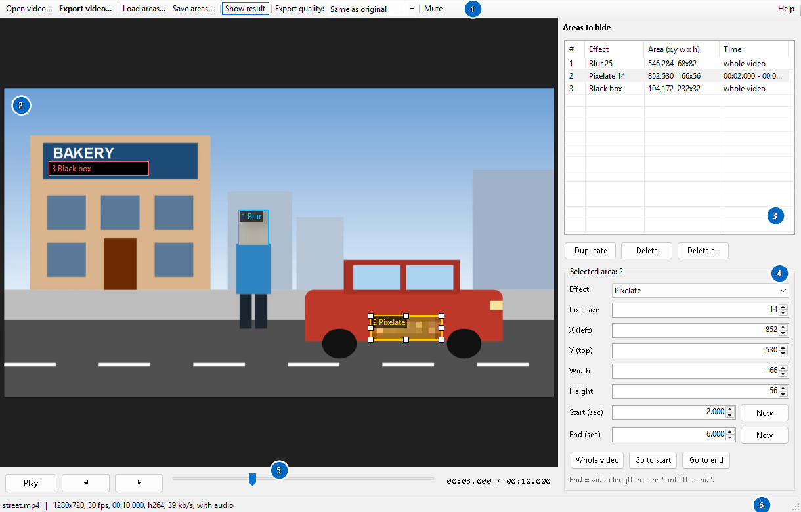
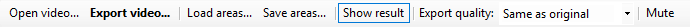
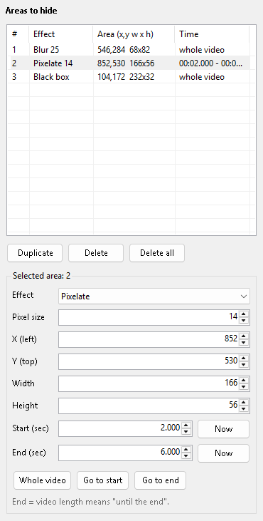
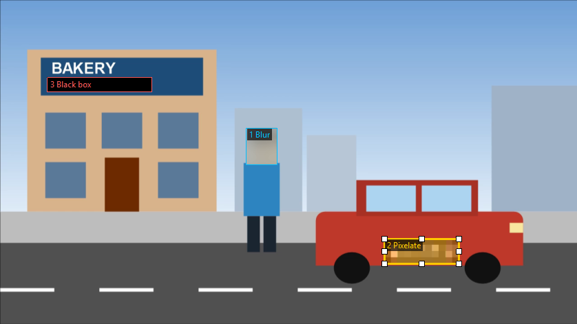
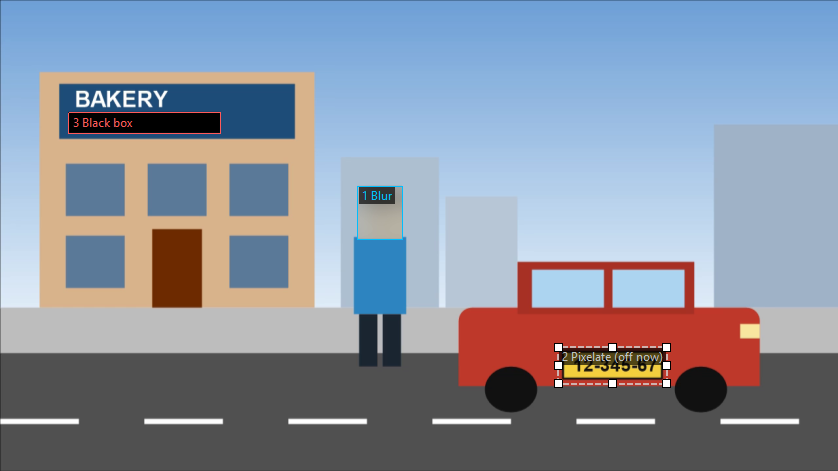
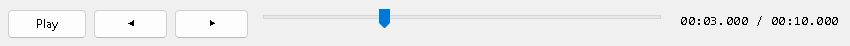
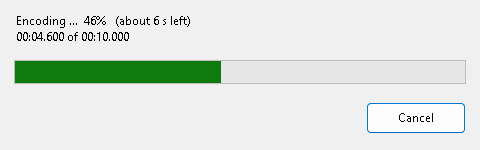
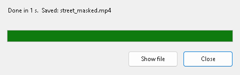

Video Mask User Manual
Hide faces, number plates and text in a video. Then save a new copy of the video.
1. What Video Mask does
You draw rectangles on the video. Each rectangle hides what is under it, with one of three effects: Blur, Pixelate or Black box. A rectangle can hide its area for the whole video or only for a time range. Then you export a new video file.
- The original video file is never changed. The export always writes a new file.
- The export keeps the resolution (picture size) and the frame rate of the original.
- The sound is kept. You can also remove it with Mute.
- The program is portable: nothing to install on Windows 10 and 11, and no internet needed.
2. Quick start
- Double-click
MaskVideo.exe. - Drag a video file from Windows Explorer into the window.
- Drag the mouse on the video to draw a rectangle over the thing you want to hide.
- Under Selected area, choose the effect: Blur, Pixelate or Black box.
- Click Export video... and save the new file.
3. Start the program
All files are in one folder. Keep them together. You can copy the folder to another PC or to a USB stick and run it from there.
| File | What it is |
|---|---|
MaskVideo.exe | The program. Double-click it to start. |
ffmpeg.exe | Reads and writes the video. It must stay next to MaskVideo.exe. |
User Manual.html | This manual. |
READ ME.txt | Short start help. |
ffmpeg-LICENSE.txt | The license of ffmpeg. |
.NET Framework 4.8 installer\ | Microsoft's installer. Only for older Windows (see below). |
Windows 10 (version 1903 or newer) and Windows 11: nothing needs to be installed.
The program does not start? On Windows 7 SP1, Windows 8.1 or an old Windows 10, .NET Framework 4.8 may be missing. Open the folder .NET Framework 4.8 installer and run ndp48-x86-x64-allos-enu.exe once. It works without internet. Then start MaskVideo.exe again.
4. The main window

- 1Toolbar. Open, export, save and load areas, preview mode, export quality, Mute and Help.
- 2Video. The current frame. Draw, move and resize areas here.
- 3Areas to hide. The list of all areas: number, effect, position and size, and time.
- 4Selected area. The settings of the area that is selected now.
- 5Play controls and time bar. Play, step one frame, and move in the video.
- 6Status bar. File name, size, frame rate, length, codec, bitrate and sound.
The toolbar

| Button | What it does |
|---|---|
| Open video... | Opens a video file (Ctrl+O). |
| Export video... | Writes a new video with the areas hidden (Ctrl+E). See Export the video. |
| Load areas... / Save areas... | Saves the list of areas to a file and loads it again. See Save and reuse areas. |
| Show result | On (pressed): the preview shows the real effect. Off: the preview shows colored boxes. See Preview and playback. |
| Export quality | The video quality of the exported file. The default is Same as original. See Export quality. |
| Mute | On (pressed): the exported file has no sound. See Remove the sound. |
| Help | Opens this manual (F1). If the file User Manual.html is not next to MaskVideo.exe, it shows a short help text instead. |
5. Open a video
There are four ways to open a video:
- Click Open video... or press Ctrl+O.
- Drag the video file from Windows Explorer into the window.
- Drag the video file onto
MaskVideo.exe. The program starts and opens it. - Use "Open with" in Windows Explorer and choose
MaskVideo.exe.
Video types: MP4, MOV, MKV, AVI, WMV, WebM, FLV, MPEG, TS / MTS / M2TS, 3GP, VOB, OGV, MXF, GIF and more. Every type that ffmpeg can read works.
Phone videos are shown the correct way up, also when the phone was held upright while recording.
When the video is open, the status bar shows its facts, for example 1920x1080, 30 fps, 01:25.400, h264, 16000 kb/s, with audio.
Open a second video: if there are areas in the list, the program asks if you want to keep them for the new video. Click Yes to keep them. Areas that are bigger than the new video are made smaller to fit.
6. Add and change areas
An area is a rectangle that hides a part of the video. You can add as many areas as you need.

Draw a new area
Drag the mouse on the video, from one corner of the area to the other corner. The mouse pointer is a cross over the video. A simple click does not make an area.
Select an area
Click the area on the video, or click its line in the list. The selected area has white squares on its corners and sides.
Move an area
Drag the inside of the area.
Change the size
Drag one of the white squares.
Type exact numbers
Under Selected area, type X (left), Y (top), Width and Height. The numbers are pixels of the full-size video.
Copy and delete
- Duplicate (or Ctrl+D) makes a copy of the selected area, a little to the right and down.
- Delete (or Delete) deletes the selected area.
- Delete all deletes all areas. The program asks first.
- Right-click an area on the video for a menu with the same commands.
Good to know
- The colors on the video show the effect: blue = Blur, yellow = Pixelate, red = Black box. Each area has a label with its number and effect.
- A new area gets the effect and strength that you used last.
- An area always stays inside the video. The smallest size is 8 x 8 pixels. The program makes all numbers even (for example 101 becomes 100), because video formats work best that way.
7. Effects
Select an area, then choose the effect in the Effect box under Selected area.
| Effect | What it does | Strength |
|---|---|---|
| Blur | Makes the area soft and unclear. | Blur strength, 1 to 100. A bigger number gives a stronger blur. Default: 20. |
| Pixelate | Shows the area as big squares (blocks). | Pixel size: the size of one block in pixels. A bigger number hides more. |
| Black box | Covers the area with solid black. | No strength. |

Tip: for faces, number plates and text, Pixelate with a large pixel size or a Black box hides the content more safely than a light blur.
8. Hide an area for only part of the video
A new area hides its part of the picture for the whole video. To hide it only for some time, set its start and end:
- Move to the first frame where the area must be hidden.
- Select the area and click Now next to Start (sec).
- Move to the last frame where the area must be hidden.
- Click Now next to End (sec).
You can also right-click the area and choose Start at current frame or End at current frame. Or type the time in seconds in Start (sec) and End (sec).
- Whole video sets the area back to the whole video.
- Go to start and Go to end move the video to the start or end time of the area. A double-click on the area in the list also goes to its start.
- When End is the length of the video, it means "until the end".
- The Time column in the list shows
whole videoor the time range, for example00:02.000 - 00:06.000. - Start and end are exact to the frame.

9. Preview and playback
Show result
The Show result button in the toolbar sets how the preview looks:
The preview picture is made smaller than the video (at most 1280 pixels wide) so that it is fast. The export always uses the full size.
Play and move in the video

- Play / Pause or Space. The playback has no sound. With Show result on, the effects are shown while it plays.
- The ◀ and ▶ buttons, or ← and →, move one frame.
- Shift+← and Shift+→ move one second.
- Home and End go to the first and the last frame.
- Drag the time bar to move to any point.
- The time shows as minutes:seconds.milliseconds, for example
00:03.000 / 00:10.000.
10. Export the video
- Choose the Export quality in the toolbar (the default Same as original is good for most videos). Press Mute if the new file must have no sound.
- Click Export video... or press Ctrl+E.
- Choose the folder, the name and the type of the new file. The program suggests the folder of the original, the original name with
_maskedat the end, and the same type as the original. - Click Save. The export window shows the progress.
If there are no areas, the program asks if you want to export anyway. It does not ask when Mute is on, because then the export removes the sound.


File types
In the save window, choose another type in the Save as type list: MP4, MKV, MOV, AVI or WebM. You can also type another extension that ffmpeg knows.
| Type | Video | Sound |
|---|---|---|
| MP4, MOV, M4V, MKV, TS, MTS, M2TS | H.264, or HEVC when the original is HEVC (with Same as original) | Copied without change. Re-encoded if the type does not accept it. |
| FLV, 3GP | H.264 | Copied or re-encoded. |
| WebM | VP9 | Re-encoded to Opus when needed. |
| AVI, WMV, MPG and others | The normal codec of the type, high quality | Copied or re-encoded. |
| GIF | GIF animation | No sound (GIF has no sound). |
Messages after the export
- "The sound was re-encoded to fit the file type." The sound could not be copied into this type, so it was converted.
- "The sound could not be written to this file type, so the video has no sound." Choose MP4 or MKV to keep the sound.
- "Sound removed." Mute was on.
- "The video was copied without change." See Remove the sound.
The original file is safe. The program does not let you save over the original video. Choose a different name.
11. Export quality
The video must be encoded again, because the pixels in the areas change. The Export quality box sets how:
| Setting | What it does |
|---|---|
| Same as original (default) | The same codec as the original (H.264 stays H.264, HEVC stays HEVC), the same bit depth for HEVC (10-bit HDR phone video stays 10-bit, with its HDR color tags) and the same bitrate. The new file has about the same size and quality as the original. For AVI, WMV and other old types it works like High. |
| High | H.264 (VP9 for WebM) at a very high quality. The file can be bigger than the original. |
| Normal | H.264 at a good quality. A smaller file. |
| Small file | H.264 at a lower quality. The smallest file. |
What never changes
The export never makes the picture bigger or smaller, and never changes the frame rate. Every frame keeps its time, also in phone videos with a changing frame rate. This was tested with MP4, MOV, MKV, TS and WebM.
A few exceptions, because of the file types:
- A video with an odd width or height (for example 641 x 361) loses 1 column or row of pixels in H.264 types. It is cut, not scaled.
- A phone video that has a "rotate" flag is written already turned the correct way up. It looks the same.
- GIF stores the time of each frame in steps of 1/100 second, so 30 fps cannot be kept exactly. 25 fps can.
- AVI keeps all frames and the frame rate, but the video can start one frame late. Use MP4, MKV or MOV when exact timing matters.
- 10-bit H.264 becomes 8-bit. 10-bit HEVC stays 10-bit only with Same as original.
Export time: HEVC videos (most new phones record HEVC) take longer to export with Same as original, because HEVC is slower to encode than H.264.
12. Remove the sound (Mute)
When Mute in the toolbar is pressed, the exported file has no sound. Mute changes only the export. The playback in the program never has sound.
Only remove the sound from a video
- Open the video. Do not add any areas.
- Press Mute.
- Click Export video... and save with the same type as the original.
With no areas, the video is copied without any change: it is very fast, and there is no quality loss. If the chosen type cannot hold the original video (for example an H.264 video saved as WebM), the video is encoded instead.
13. Save and reuse areas
A camera that does not move shows the same things in the same place. You can save the list of areas once and use it again on other clips from the same camera.
- Save: click Save areas... (or press Ctrl+S). The areas are saved in a small
.masksfile. The program suggests the name of the video. - Load: click Load areas..., or drag a
.masksfile into the window. If there are already areas in the list, the program asks: Yes = replace them, No = add to them. - Loaded areas that are bigger than the video are made smaller to fit.
A .masks file is a plain text file. You can open it in Notepad. Each line is one area: effect, X, Y, width, height, strength, start and end in seconds. end means "until the end of the video".
# Video Mask areas # mode x y width height strength start end # times are in seconds; end = 'end' means until the end of the video Blur 546 284 68 82 25 0 end Pixelate 852 530 166 56 14 2 6 Black 104 172 232 32 20 0 end
14. Keyboard shortcuts
| Keys | What they do |
|---|---|
| F1 | Open this manual |
| Ctrl+O | Open a video |
| Ctrl+E | Export the video |
| Ctrl+S | Save the areas |
| Ctrl+D | Duplicate the selected area |
| Space | Play / pause |
| ← / → | One frame back / forward |
| Shift+← / Shift+→ | One second back / forward |
| Home / End | First / last frame |
| Delete | Delete the selected area |
The keys Space, the arrows, Home, End and Delete do not work while you type in a number box. Click on the video first.
15. Problems and answers
- The program does not start.
- Install .NET Framework 4.8 with the installer in the folder
.NET Framework 4.8 installer. See Start the program. - The message "ffmpeg.exe was not found" appears.
- Put
ffmpeg.exein the same folder asMaskVideo.exe. The program also finds it in a sub folderffmpeg\orffmpeg\bin\. - The message "Could not open this video" appears.
- The file is damaged, it is not a video, or it has no picture (for example a sound file). The message shows the last lines of the error from ffmpeg.
- The export failed.
- The message shows the error from ffmpeg. Try MP4 as the file type. Check that the disk has enough free space. The unfinished file is deleted.
- The new video has no sound.
- Mute was on, or the chosen file type cannot hold the sound (the message after the export tells you). Export again as MP4 or MKV with Mute off.
- Is my original video changed?
- No. The program only reads the original. It does not let you save over it.
- The new video is 1 pixel smaller.
- The original has an odd width or height. H.264 needs even numbers, so one column or row is cut. See Export quality.
- The preview is less sharp than the video.
- The preview is made smaller so that it is fast. The export uses the full size.
- Playback starts late in some .ts or .mts files.
- Some of these files have few "key frames". After a jump, ffmpeg must read from the last key frame, which can take a few seconds. The export is not affected.
- The export of a phone video is slow.
- Most new phones record HEVC. With Same as original, HEVC stays HEVC, which is slower to encode. Choose High for a faster export as H.264 (the file can be bigger).